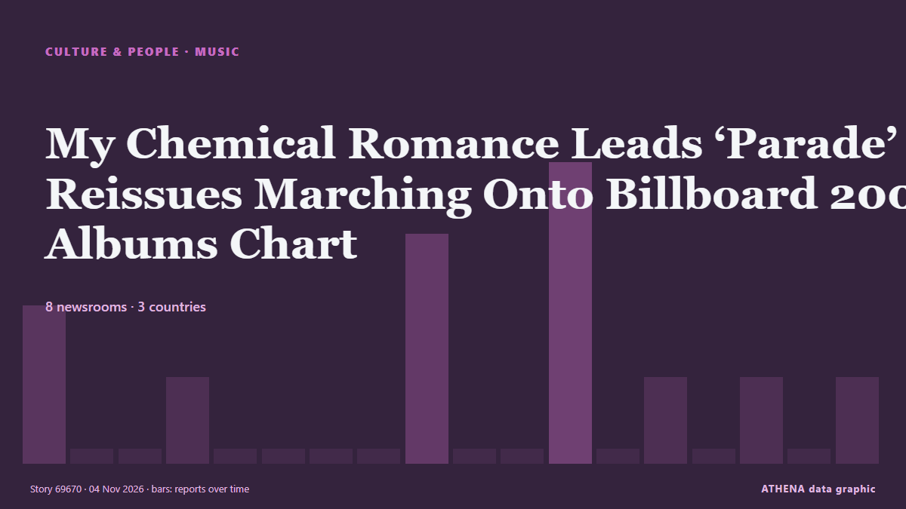

Music
SponsoredPresented by  Cybernetics and Artificial Intelligence Lab Welcome to the Cybernetics and Artificial Intelligence Laboratory, established at the Department of Business Administration of the National and Kapodistrian University of Athens. The lab is headed by Professor Dimitrios Thomakos. The lab aims to do research that can be published in top venues. Our research uses tools and methods of Artificial Intelligence, and lies in the following areas: - Forecasting - Decision making - Cyber security - Finance We are always looking forward to collaborating with exceptional students!
Cybernetics and Artificial Intelligence Lab Welcome to the Cybernetics and Artificial Intelligence Laboratory, established at the Department of Business Administration of the National and Kapodistrian University of Athens. The lab is headed by Professor Dimitrios Thomakos. The lab aims to do research that can be published in top venues. Our research uses tools and methods of Artificial Intelligence, and lies in the following areas: - Forecasting - Decision making - Cyber security - Finance We are always looking forward to collaborating with exceptional students!
| 22 Oct | 0 |
|---|---|
| 23 Oct | 1 |
| 24 Oct | 0 |
| 25 Oct | 0 |
| 26 Oct | 0 |
| 27 Oct | 0 |
| 28 Oct | 0 |
| 29 Oct | 0 |
| 30 Oct | 3 |
| 31 Oct | 3 |
| 1 Nov | 1 |
| 2 Nov | 7 |
| 3 Nov | 1 |
| 4 Nov | 0 |

My Chemical Romance Leads ‘Parade’ of Reissues Marching Onto Billboard 200 Albums Chart
On the new Billboard Pop Shop Podcast, Katie & Keith are taking a closer look at re-released albums from Beyoncé, The Beatles, Mac Miller & more. from Billboard
Macklemore 'overwhelmed' after Free Palestine Tour
Macklemore says ‘being human is not complicated’ as he kicked off his Free Palestine tour on Thursday night. from Al Jazeera English
Jingle Ball 2026: Buy Tickets to See Olivia Rodrigo, Sombr, KATSEYE, ADÉLA & More
iHeartRadio is coming back for its annual Jingle Ball with a nine-city tour across the U.S. from Billboard
What to Do in Kigali in November 2026
Two confirmed Kigali events in November 2026: the Africa Fintech Summit from 18 to 20 November and a gospel concert at BK Arena on 28 November. from The Rio Times
Kennedy Center Honorees Class Of 2026: Paul Anka, David Foster, Andy Garcia, David Mamet & Barbara Mandrell
One day ahead of D.C.’s Big Day, we have the latest recipients of the annual Kennedy Center Honors. from Deadline
BST Hyde Park 2027: RAYE announced as next headliner
She will be joined by Sienna Spiro for her biggest headline show to date. from NME
Shania Twain to headline Belfast’s Belsonic as part of UK and Ireland summer tour
Tickets go on general sale this Friday, November 6 at 9am from Ticketmaster. from The Irish News (Belfast)
In Afghanistan, musicians defy music ban to keep traditions alive
Despite a music ban by the Taliban, Afghan musicians continue to play in secret, determined to preserve their cultural traditions. from Arab News
Harry Styles dresses as viral ‘pizza rat’ for final Madison Square Garden show
His band continued the theme by dressing up as New York City landmarks and references. from Evening Standard (London)
Macklemore says he was unable to ‘stay silent’ about Israel-Palestine conflict
The US rapper performed at the OVO Arena Wembley on Friday night. from The Irish News (Belfast)
The unsung heroes of snake antivenom production
There are the hidden figures working behind the scenes in the music industry. from IOL